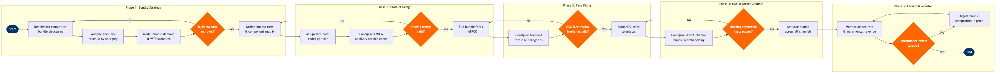

| Step | L4 Step Name | KPI / Target | Pain Point / Risk | Gate |
|---|---|---|---|---|
| 1.1 | Benchmark competitor bundle structures | Coverage of top 10 competing carriers ≥100%; refresh cycle ≤30 days | ATPCO branded fare data can lag 48–72 hrs post-filing; indirect bundle components (lounge, hotels) not visible in GDS fare displays | |
| 1.2 | Analyse ancillary revenue by product category | Ancillary revenue per passenger ≥$28; data completeness ≥98% | EMD-A revenue attributed to originating flight only; connecting itinerary ancillary splits require custom Redshift query logic | |
| 1.3 | Model bundle demand & willingness-to-pay scenarios | Model R² ≥0.85; scenario output covers ≥3 price points per tier | PROS WTP modelling requires minimum 12 months of ancillary transaction history; new routes have insufficient training data | |
| 1.4 | Approve bundle business case for launch | Projected ancillary revenue uplift ≥12% within 6 months of launch | Approval cycles involving Revenue Management, IT, and Distribution teams average 3–5 weeks; misaligned incentives between RM (yield) and Pricing (volume) can stall sign-off | ⚠ |
| 2.1 | Define bundle tier hierarchy and component matrix | Component matrix covers ≥3 distinct tiers (e.g. Basic, Standard, Flex) | Altéa PSS service catalogue constraints limit ancillary bundling to pre-defined EMD-A service types; custom inclusions (e.g. lounge access) require workaround fare conditions text | |
| 2.2 | Assign fare basis codes per bundle tier and cabin | Zero duplicate fare basis code conflicts; code assignment completed within 3 business days | ATPCO fare basis codes limited to 8 alphanumeric characters; encoding tier, cabin, and market group within this constraint requires strict naming convention governance | |
| 2.3 | Configure EMD-A ancillary service codes in PSS | 100% of bundle ancillary components mapped to valid IATA PADIS service codes; zero orphaned EMD records | IATA PADIS service type catalogue does not cover all airline-specific bundle inclusions; non-standard services require free-text SubCode which is not machine-readable in GDS displays | |
| 2.4 | Validate bundle configuration in Altéa staging | Test pass rate ≥95% before promotion to production; critical defects = 0 | Altéa staging environment refresh lags production data by up to 7 days; edge cases involving interline itineraries cannot be fully simulated in staging | ⚠ |
| 3.1 | File bundle fares and conditions in ATPCO | Filing submission-to-activation time ≤24 hrs; zero rejected categories on first submission | ATPCO Cat 15 (sales restrictions) and Cat 25 (fare combinations) rules for bundles are complex to encode; errors trigger GDS pricing failures that are difficult to trace back to specific category conflicts | |
| 3.2 | Configure branded fare rule categories in ATPCO | Branded fare attributes display correctly in ≥95% of GDS certified pricing responses | ATPCO Branded Fares standard (BF categories) adoption varies by GDS; Travelport and Amadeus GDS render branded attributes differently, requiring separate QA validation per channel | |
| 3.3 | Validate GDS fare display and auto-pricing accuracy | Pricing accuracy ≥99.9% vs. filed fare; branded attribute display rate ≥95% across all three GDS | GDS fare calculation engines interpret ATPCO combination rules differently; a rule that prices correctly in Sabre may misprice in Travelport due to differing Cat 25 implementation | ⚠ |
| 4.1 | Build NDC offer templates with bundle attributes | NDC offer response time ≤800 ms (p95); bundle attributes present in 100% of eligible offer responses | IATA NDC 21.3 schema's BundleAttributeList does not support dynamic bundle composition at booking time; real-time ancillary availability (seat maps, bag slots) must be pre-fetched and cached, creating staleness risk on high-load routes | |
| 4.2 | Configure bundle merchandising on direct booking channel | Bundle comparison widget load time ≤1.2 s; A/B test variant coverage ≥20% of eligible sessions | Airline.com front-end rendering of bundle tier comparisons requires bespoke UI development outside NDC scope; coordination between Pricing, IT, and UX teams is a recurring bottleneck | |
| 4.3 | Execute end-to-end booking regression tests | Zero P1/P2 defects in booking-to-ticket flow; regression suite ≥150 test cases | Regression suite must cover GDS, NDC, and direct channel permutations; manual test execution across three GDS takes 4–6 days without automation; automation tooling investment often deprioritised | ⚠ |
| 5.1 | Activate bundle offer across all channels | Channel activation completed within 4-hour go-live window; rollback plan tested | Coordinated go-live across ATPCO (batch distribution), NDC API (real-time), and Altéa (inventory) is error-prone; ATPCO distribution to all GDS can take up to 48 hrs, creating pricing inconsistency window | |
| 5.2 | Monitor bundle attach rate and incremental revenue | Bundle attach rate ≥18% within 30 days of launch; incremental ancillary revenue uplift ≥12% | EMD issuance data and PNR booking data arrive in Redshift via different ETL pipelines with up to 6-hour latency mismatch; attribution of bundle revenue to specific marketing or pricing actions is imprecise | |
| 5.3 | Review bundle performance vs. targets at 30/60/90 days | Review cadence: D+30, D+60, D+90; action items assigned within 5 business days of review | Causal attribution is difficult — attach rate changes may reflect pricing, competitor moves, or seasonal demand shifts; Tableau dashboards lack statistical significance testing natively | ⚠ |
| 5.4 | Adjust bundle composition or pricing based on performance | Change cycle time from decision to live ≤10 business days; pricing adjustments within ±15% of original price points without full re-approval | Minor bundle component changes (e.g. swap checked bag for seat selection) require re-filing in ATPCO, Altéa EMD config update, and NDC offer template revision — three separate systems with no single orchestration layer |